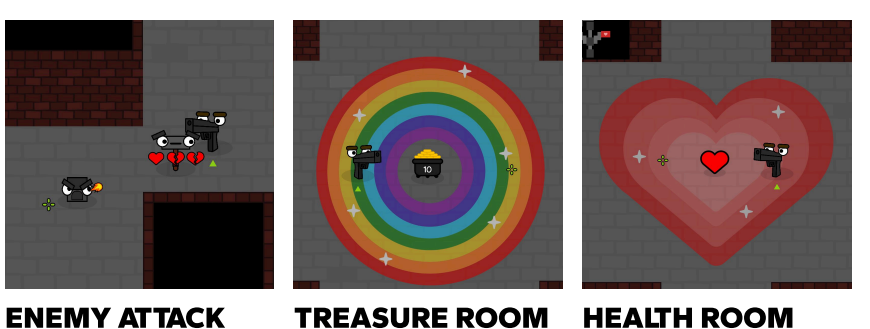
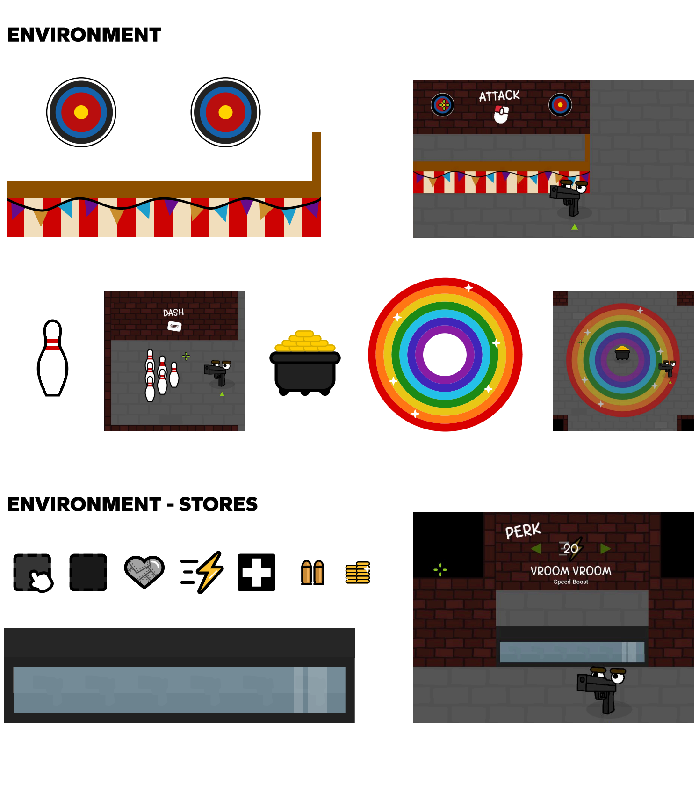
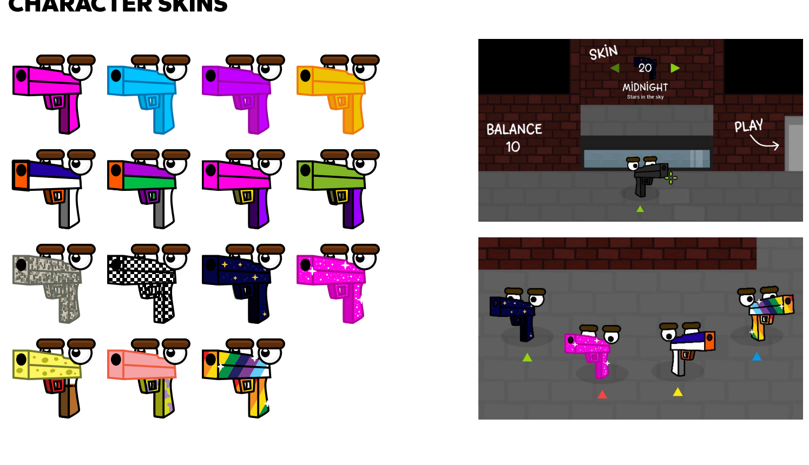

Teach through play
An interactive entrance-lobby tutorial lets players safely test attacking, dashing, and interacting before entering combat.
Building a readable art and UX system for a fast-paced cooperative roguelike.

A one-to-four-player run-and-gun where players become the weapon, survive enemy waves, and decide when to bank their rewards.
I joined Pirate Software Game Jam 16 four days after it began because the team needed an artist. I helped refine the tutorial, map design, and overall flow; created character skins, enemies, environments, and UI; wrote in-game copy; and worked closely with the programmer so the art supported animation and mechanics.
An interactive entrance-lobby tutorial lets players safely test attacking, dashing, and interacting before entering combat.
Contextual UI appears near maps, skins, and perk stores, while connected controllers automatically receive the relevant prompts.
Distinct treasure and health rooms, collectible coins, and visually differentiated stores clarify the risk-and-reward loop.
Players explore an abandoned factory, fight waves, collect coins, and return to the lobby to secure progress. Enemy, treasure, and health rooms use distinctive visual treatments so a team can read the situation at a glance.


The cartoon vector direction turned each weapon into a character. A flexible skin system gave teams identity in co-op while keeping the core silhouette and interaction language consistent.

The game reached an audience beyond the team during and after the jam.
Players could try the cooperative loop directly in a desktop browser.
Players repeatedly praised the goofy art, clear tutorial, and accessible controls while identifying map clarity and tuning as next steps.
A complete browser game with a cohesive art system, contextual onboarding, and a clear direction for future iteration.